-
To verify under writer offset control module fields and creation and updation
11:40:15 AM / 34:52:645 Fail
To verify under writer offset control module fields and creation and updation
08.02.2022 11:40:15 08.02.2022 11:45:08 34:52:645 · #test-id=1PassTo verify user can able to create the under writer off set recordGiven Navigate to ULS application URLstepdefinitions.HooksClass.addScreenshot(io.cucumber.java.Scenario)screenshot Then login with valid maker credentialsstepdefinitions.HooksClass.addScreenshot(io.cucumber.java.Scenario)screenshot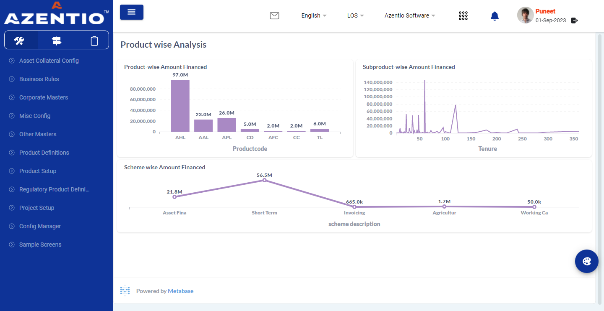And click on business rules main modulestepdefinitions.HooksClass.addScreenshot(io.cucumber.java.Scenario)screenshot
Then login with valid maker credentialsstepdefinitions.HooksClass.addScreenshot(io.cucumber.java.Scenario)screenshot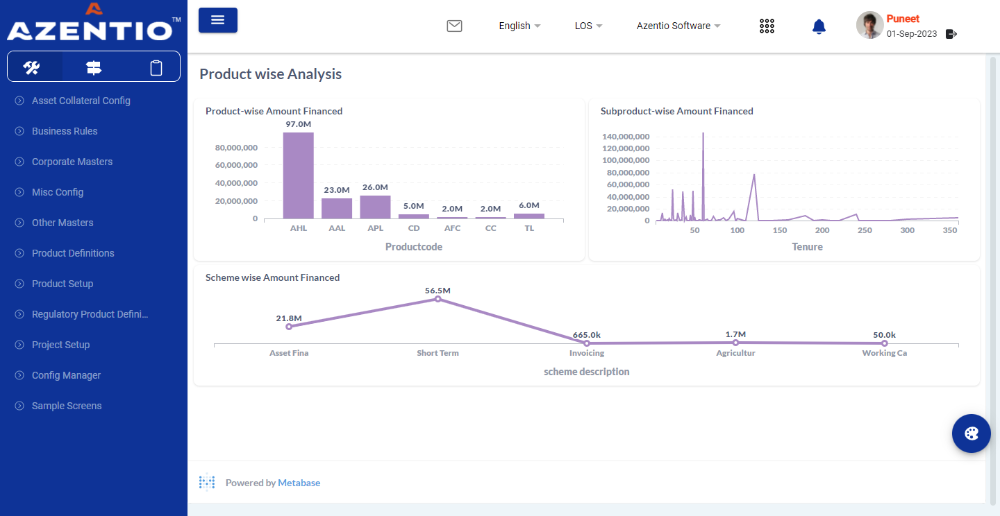And click on business rules main modulestepdefinitions.HooksClass.addScreenshot(io.cucumber.java.Scenario)screenshot And click on under writer off set control view buttonstepdefinitions.HooksClass.addScreenshot(io.cucumber.java.Scenario)screenshot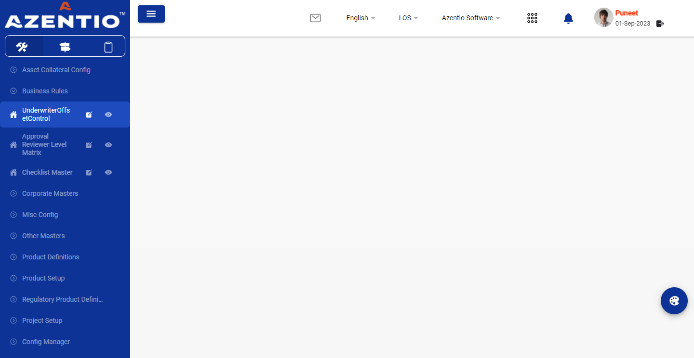Then click on add button to create under writer off set recordstepdefinitions.HooksClass.addScreenshot(io.cucumber.java.Scenario)screenshot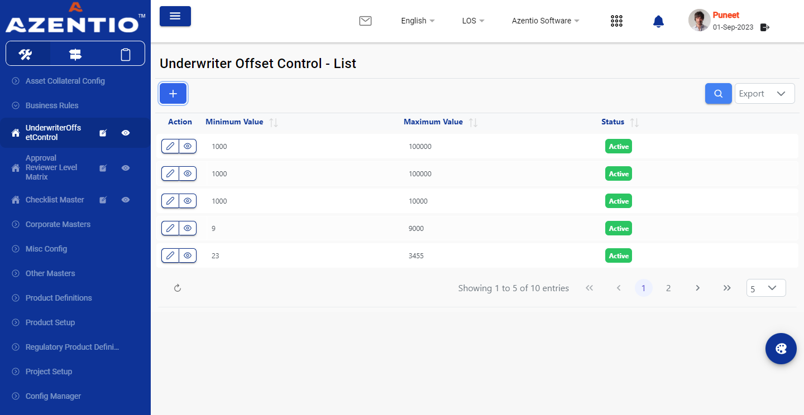Then verify back button and save buttons are visible when user click on add buttonstepdefinitions.HooksClass.addScreenshot(io.cucumber.java.Scenario)screenshot
And click on under writer off set control view buttonstepdefinitions.HooksClass.addScreenshot(io.cucumber.java.Scenario)screenshot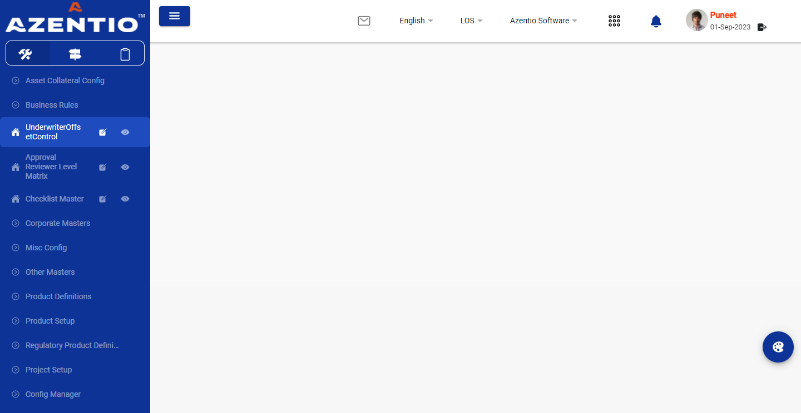Then click on add button to create under writer off set recordstepdefinitions.HooksClass.addScreenshot(io.cucumber.java.Scenario)screenshot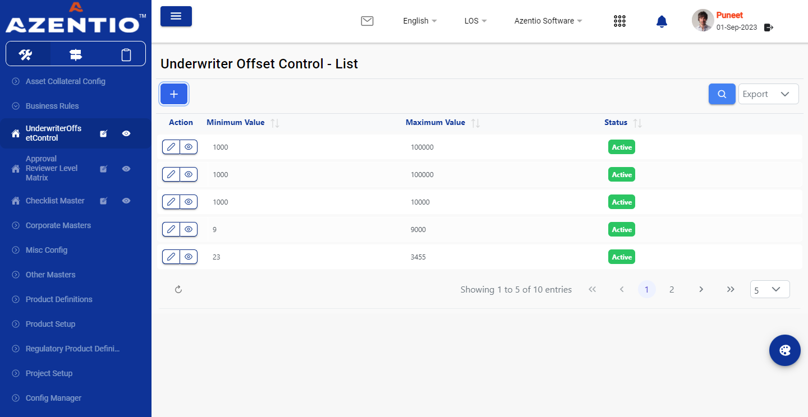Then verify back button and save buttons are visible when user click on add buttonstepdefinitions.HooksClass.addScreenshot(io.cucumber.java.Scenario)screenshot Then verify minimum value input box should be mendatory and field should be text boxstepdefinitions.HooksClass.addScreenshot(io.cucumber.java.Scenario)screenshot
Then verify minimum value input box should be mendatory and field should be text boxstepdefinitions.HooksClass.addScreenshot(io.cucumber.java.Scenario)screenshot And user can able to enter the minimum value input boxstepdefinitions.HooksClass.addScreenshot(io.cucumber.java.Scenario)screenshot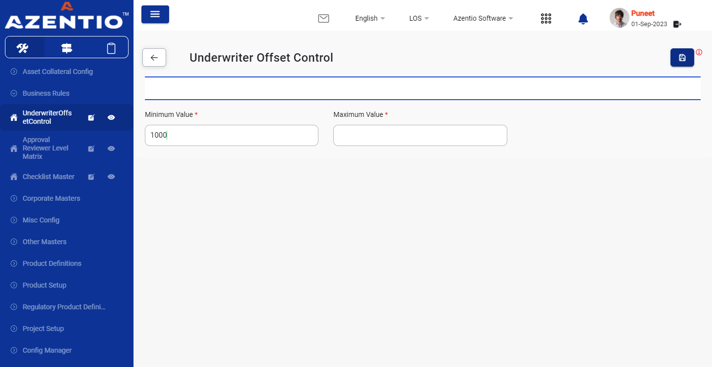Then verify maximum value input box should be mendatory and field should be text boxstepdefinitions.HooksClass.addScreenshot(io.cucumber.java.Scenario)screenshotAnd user can able to enter the maximum value input boxstepdefinitions.HooksClass.addScreenshot(io.cucumber.java.Scenario)screenshot
And user can able to enter the minimum value input boxstepdefinitions.HooksClass.addScreenshot(io.cucumber.java.Scenario)screenshot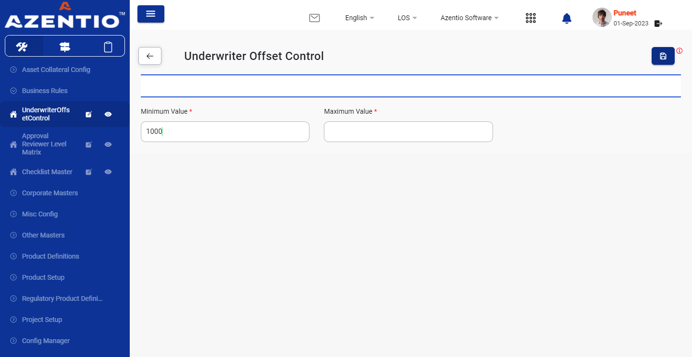Then verify maximum value input box should be mendatory and field should be text boxstepdefinitions.HooksClass.addScreenshot(io.cucumber.java.Scenario)screenshotAnd user can able to enter the maximum value input boxstepdefinitions.HooksClass.addScreenshot(io.cucumber.java.Scenario)screenshot Then verify available field should be non mendatory and field should be display onlystepdefinitions.HooksClass.addScreenshot(io.cucumber.java.Scenario)screenshotThen verify selected field should be non mendatory and field should be display onlystepdefinitions.HooksClass.addScreenshot(io.cucumber.java.Scenario)screenshotThen click on save button in under writer off set screenstepdefinitions.HooksClass.addScreenshot(io.cucumber.java.Scenario)screenshotWhen click on mail box after saving the under writer recordstepdefinitions.HooksClass.addScreenshot(io.cucumber.java.Scenario)screenshot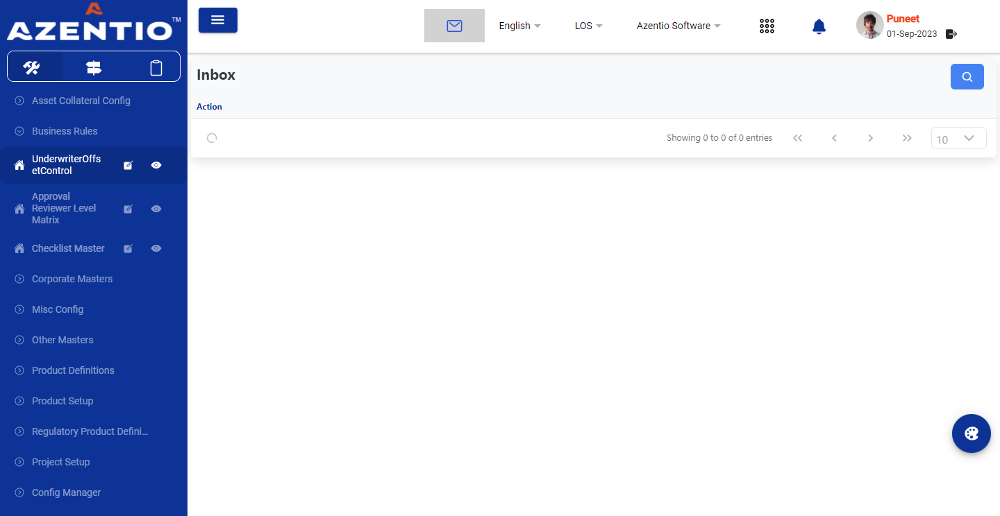Then click on search button to search the under writer off set recordstepdefinitions.HooksClass.addScreenshot(io.cucumber.java.Scenario)screenshot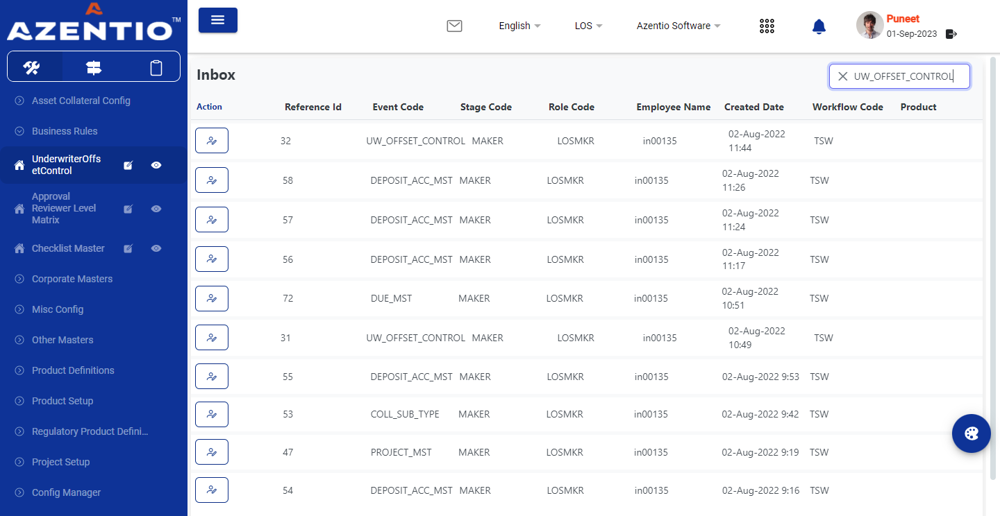And click on first under writer off set recordstepdefinitions.HooksClass.addScreenshot(io.cucumber.java.Scenario)screenshot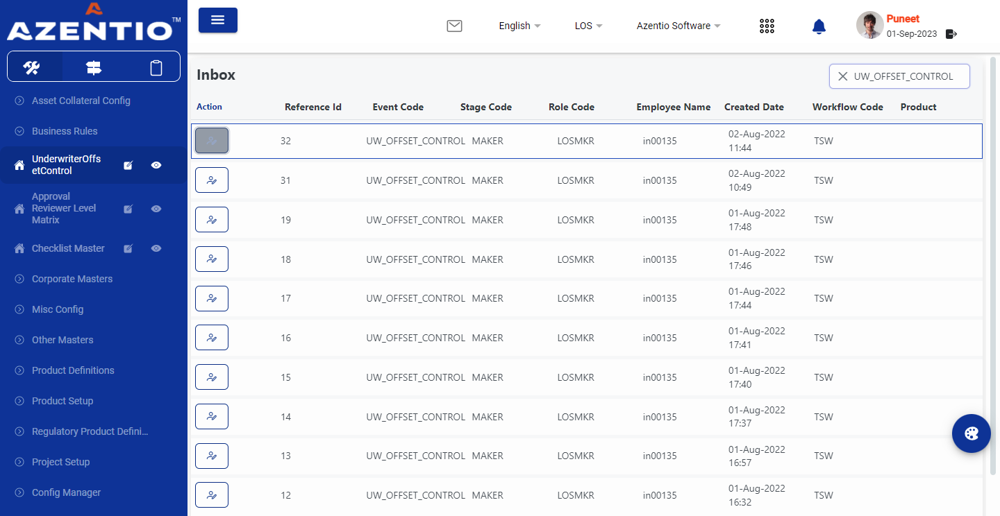And submit the under writer off set recordstepdefinitions.HooksClass.addScreenshot(io.cucumber.java.Scenario)screenshot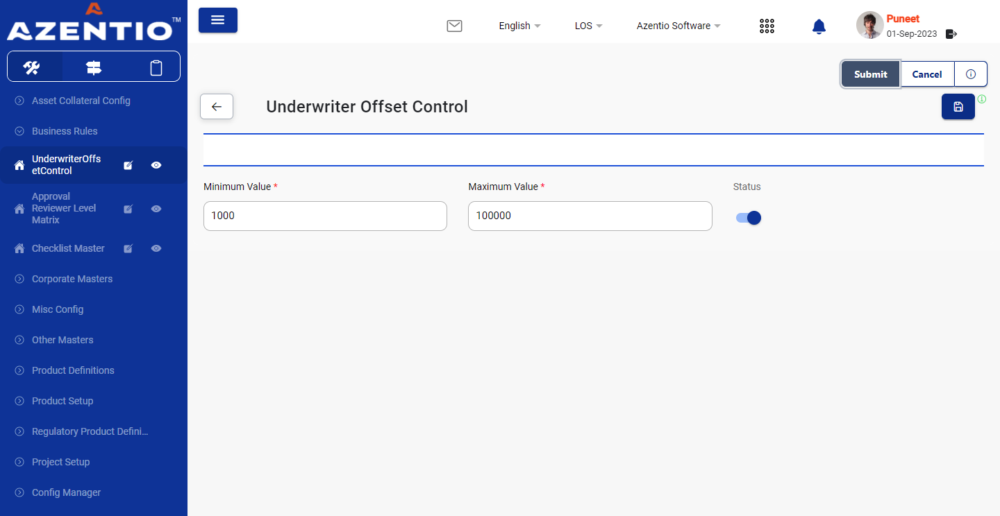Then give alert remark and click on submit in alertstepdefinitions.HooksClass.addScreenshot(io.cucumber.java.Scenario)screenshot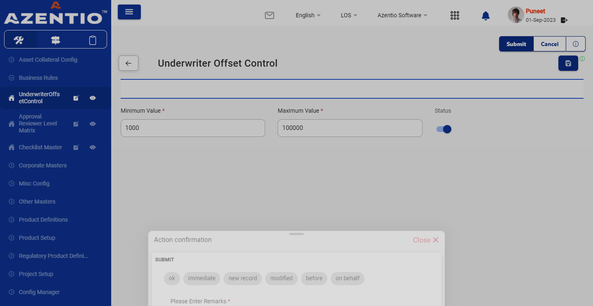Then store the checker idstepdefinitions.HooksClass.addScreenshot(io.cucumber.java.Scenario)screenshot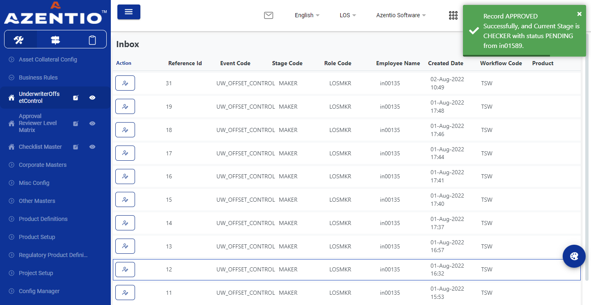FailTo verify checker user can able to approve the under writer off set control recordGiven Navigate to ULS application URLstepdefinitions.HooksClass.addScreenshot(io.cucumber.java.Scenario)screenshot
Then verify available field should be non mendatory and field should be display onlystepdefinitions.HooksClass.addScreenshot(io.cucumber.java.Scenario)screenshotThen verify selected field should be non mendatory and field should be display onlystepdefinitions.HooksClass.addScreenshot(io.cucumber.java.Scenario)screenshotThen click on save button in under writer off set screenstepdefinitions.HooksClass.addScreenshot(io.cucumber.java.Scenario)screenshotWhen click on mail box after saving the under writer recordstepdefinitions.HooksClass.addScreenshot(io.cucumber.java.Scenario)screenshot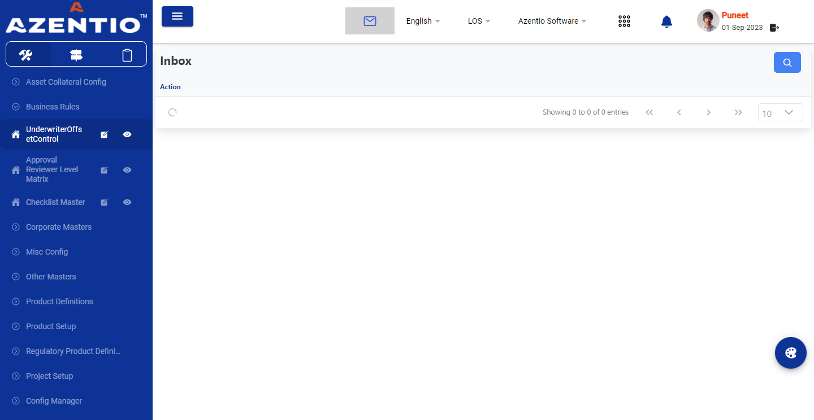Then click on search button to search the under writer off set recordstepdefinitions.HooksClass.addScreenshot(io.cucumber.java.Scenario)screenshot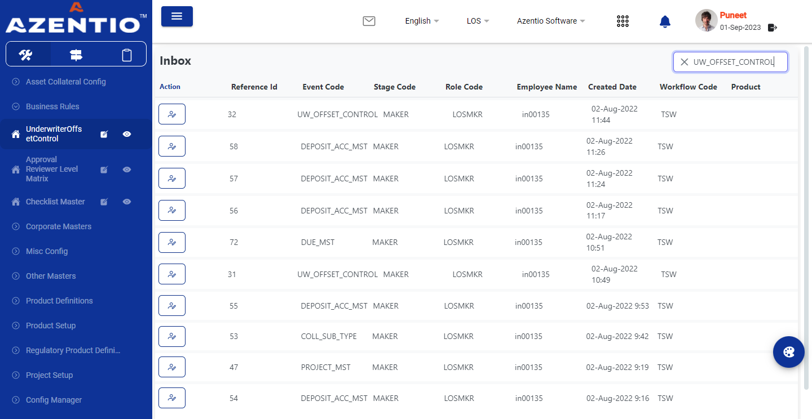And click on first under writer off set recordstepdefinitions.HooksClass.addScreenshot(io.cucumber.java.Scenario)screenshot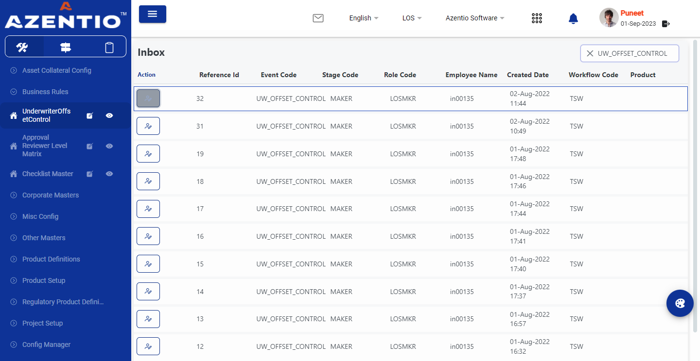And submit the under writer off set recordstepdefinitions.HooksClass.addScreenshot(io.cucumber.java.Scenario)screenshot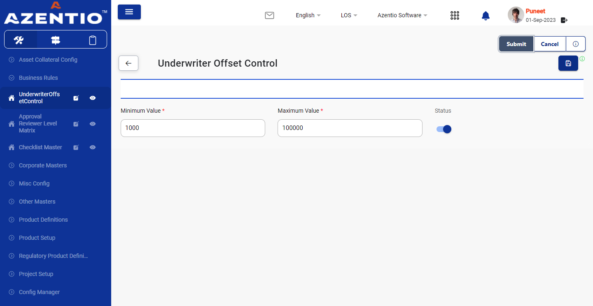Then give alert remark and click on submit in alertstepdefinitions.HooksClass.addScreenshot(io.cucumber.java.Scenario)screenshot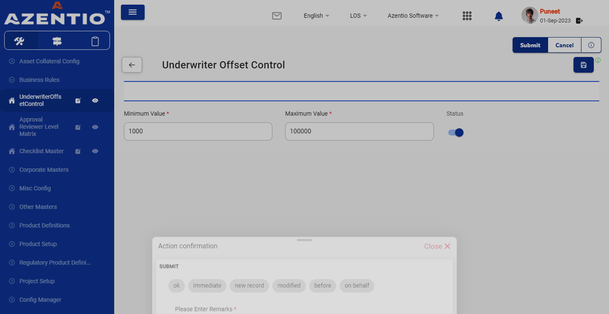Then store the checker idstepdefinitions.HooksClass.addScreenshot(io.cucumber.java.Scenario)screenshot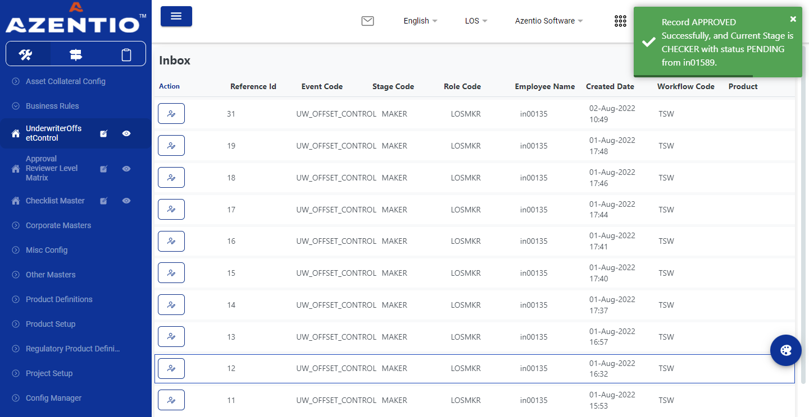FailTo verify checker user can able to approve the under writer off set control recordGiven Navigate to ULS application URLstepdefinitions.HooksClass.addScreenshot(io.cucumber.java.Scenario)screenshot Then login with checker userstepdefinitions.HooksClass.addScreenshot(io.cucumber.java.Scenario)screenshot
Then login with checker userstepdefinitions.HooksClass.addScreenshot(io.cucumber.java.Scenario)screenshot And click on menu buttonstepdefinitions.HooksClass.addScreenshot(io.cucumber.java.Scenario)screenshot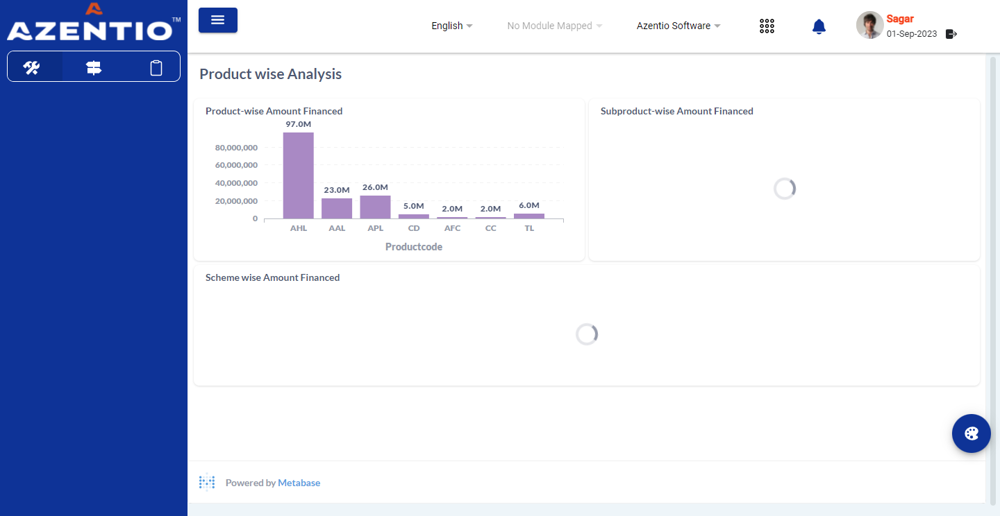Then select the under writer record in checker stageStep skippedAnd click on approve button in checker stage to approve the under writer off set control recordStep skippedAnd give the checker remark in alert pop up for approve the under writer recordStep skippedAnd click on approve button in remark pop up for approve the under writer recordStep skippedThen verify checker user can able to see the approve pop up after approving the under writer recordStep skippedPassTo verify user can able to create the under writer off set recordGiven Navigate to ULS application URLstepdefinitions.HooksClass.addScreenshot(io.cucumber.java.Scenario)screenshot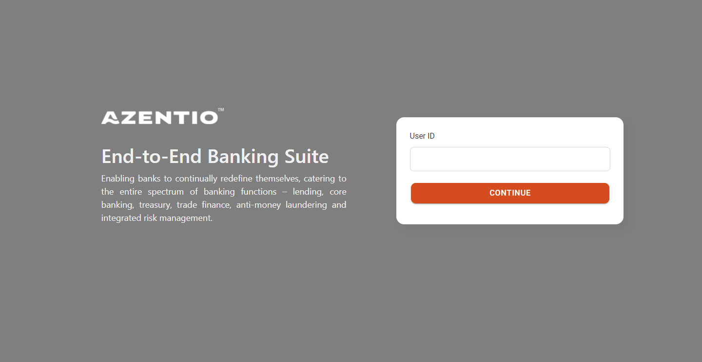Then login with valid maker credentialsstepdefinitions.HooksClass.addScreenshot(io.cucumber.java.Scenario)screenshotAnd click on business rules main modulestepdefinitions.HooksClass.addScreenshot(io.cucumber.java.Scenario)screenshot
And click on menu buttonstepdefinitions.HooksClass.addScreenshot(io.cucumber.java.Scenario)screenshot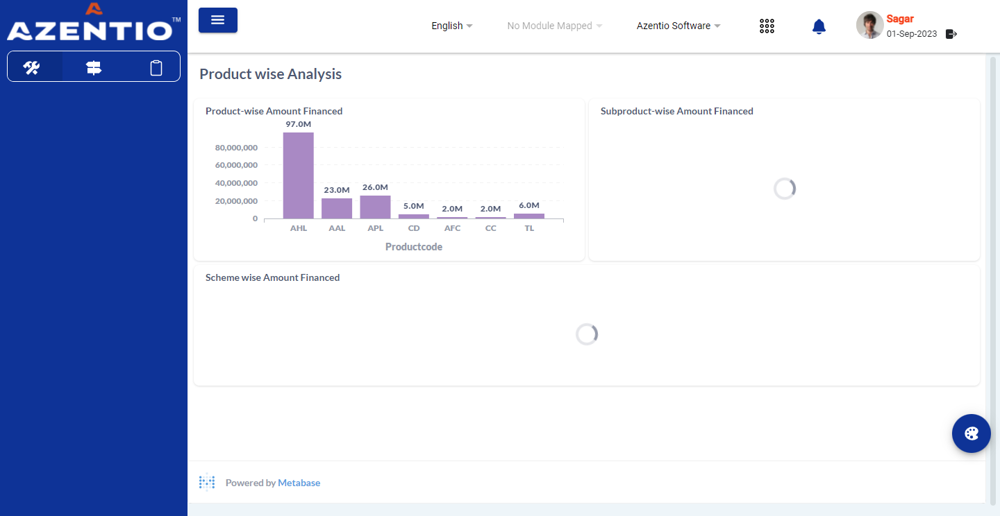Then select the under writer record in checker stageStep skippedAnd click on approve button in checker stage to approve the under writer off set control recordStep skippedAnd give the checker remark in alert pop up for approve the under writer recordStep skippedAnd click on approve button in remark pop up for approve the under writer recordStep skippedThen verify checker user can able to see the approve pop up after approving the under writer recordStep skippedPassTo verify user can able to create the under writer off set recordGiven Navigate to ULS application URLstepdefinitions.HooksClass.addScreenshot(io.cucumber.java.Scenario)screenshot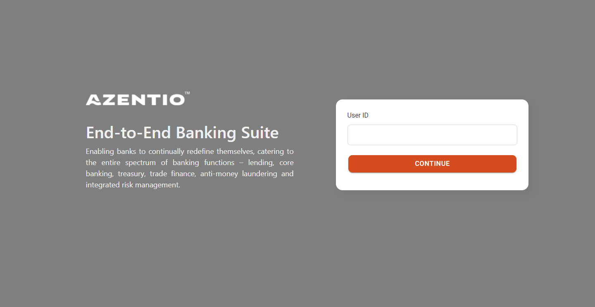Then login with valid maker credentialsstepdefinitions.HooksClass.addScreenshot(io.cucumber.java.Scenario)screenshotAnd click on business rules main modulestepdefinitions.HooksClass.addScreenshot(io.cucumber.java.Scenario)screenshot And click on under writer off set control view buttonstepdefinitions.HooksClass.addScreenshot(io.cucumber.java.Scenario)screenshot
And click on under writer off set control view buttonstepdefinitions.HooksClass.addScreenshot(io.cucumber.java.Scenario)screenshot Then click on add button to create under writer off set recordstepdefinitions.HooksClass.addScreenshot(io.cucumber.java.Scenario)screenshot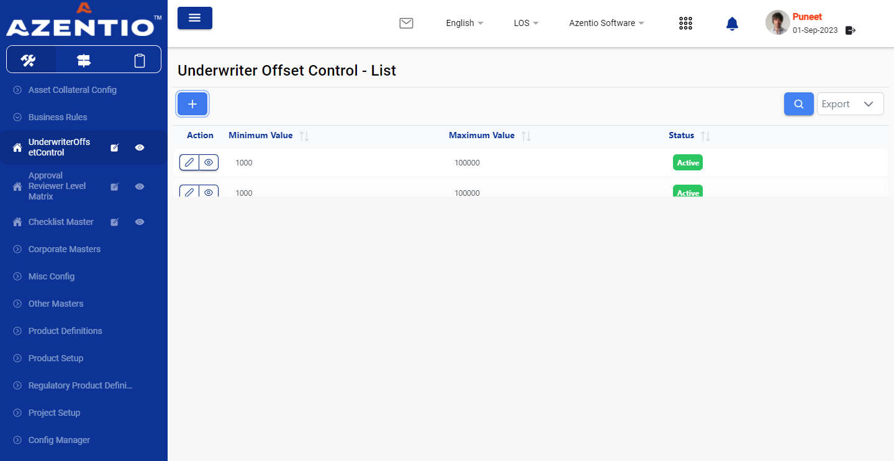Then verify back button and save buttons are visible when user click on add buttonstepdefinitions.HooksClass.addScreenshot(io.cucumber.java.Scenario)screenshotThen verify minimum value input box should be mendatory and field should be text boxstepdefinitions.HooksClass.addScreenshot(io.cucumber.java.Scenario)screenshotAnd user can able to enter the minimum value input box for checker rejectstepdefinitions.HooksClass.addScreenshot(io.cucumber.java.Scenario)screenshotThen verify maximum value input box should be mendatory and field should be text boxstepdefinitions.HooksClass.addScreenshot(io.cucumber.java.Scenario)screenshot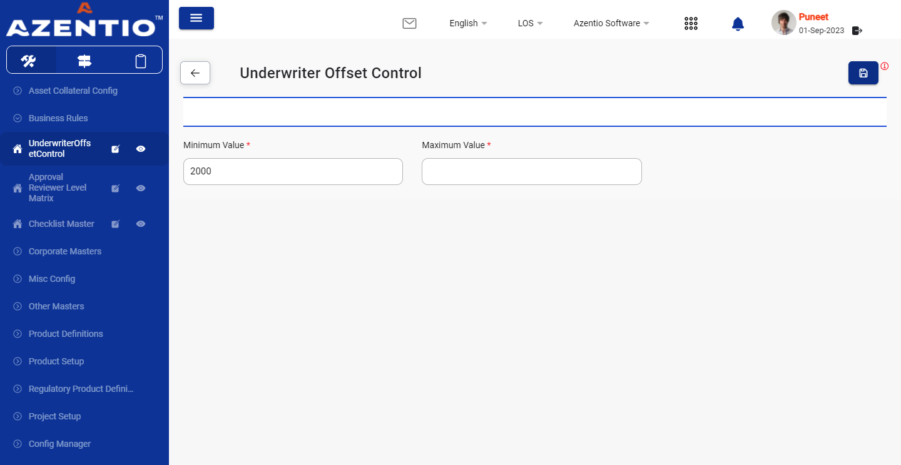And user can able to enter the maximum value input box for checker rejectstepdefinitions.HooksClass.addScreenshot(io.cucumber.java.Scenario)screenshotThen verify available field should be non mendatory and field should be display onlystepdefinitions.HooksClass.addScreenshot(io.cucumber.java.Scenario)screenshotThen verify selected field should be non mendatory and field should be display onlystepdefinitions.HooksClass.addScreenshot(io.cucumber.java.Scenario)screenshotThen click on save button in under writer off set screenstepdefinitions.HooksClass.addScreenshot(io.cucumber.java.Scenario)screenshot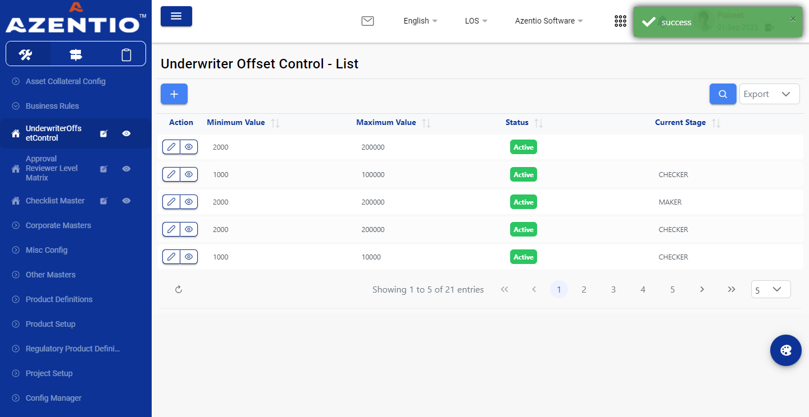When click on mail box after saving the under writer recordstepdefinitions.HooksClass.addScreenshot(io.cucumber.java.Scenario)screenshot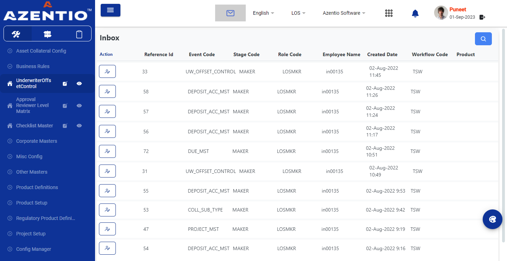Then click on search button to search the under writer off set recordstepdefinitions.HooksClass.addScreenshot(io.cucumber.java.Scenario)screenshotAnd click on first under writer off set recordstepdefinitions.HooksClass.addScreenshot(io.cucumber.java.Scenario)screenshot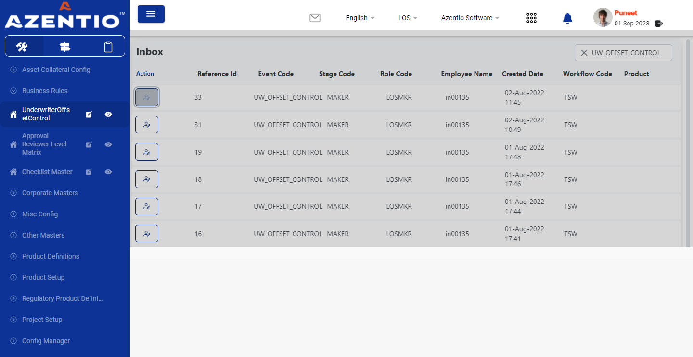And submit the under writer off set recordstepdefinitions.HooksClass.addScreenshot(io.cucumber.java.Scenario)screenshot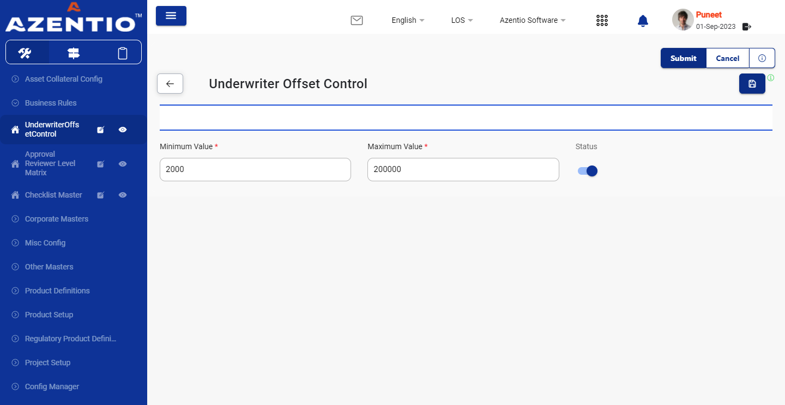Then give alert remark and click on submit in alertstepdefinitions.HooksClass.addScreenshot(io.cucumber.java.Scenario)screenshotThen store the checker idstepdefinitions.HooksClass.addScreenshot(io.cucumber.java.Scenario)screenshot
Then click on add button to create under writer off set recordstepdefinitions.HooksClass.addScreenshot(io.cucumber.java.Scenario)screenshot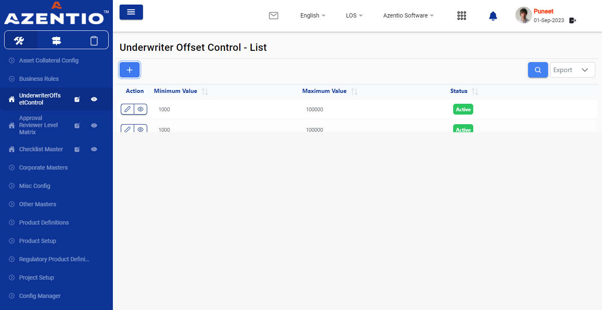Then verify back button and save buttons are visible when user click on add buttonstepdefinitions.HooksClass.addScreenshot(io.cucumber.java.Scenario)screenshotThen verify minimum value input box should be mendatory and field should be text boxstepdefinitions.HooksClass.addScreenshot(io.cucumber.java.Scenario)screenshotAnd user can able to enter the minimum value input box for checker rejectstepdefinitions.HooksClass.addScreenshot(io.cucumber.java.Scenario)screenshotThen verify maximum value input box should be mendatory and field should be text boxstepdefinitions.HooksClass.addScreenshot(io.cucumber.java.Scenario)screenshot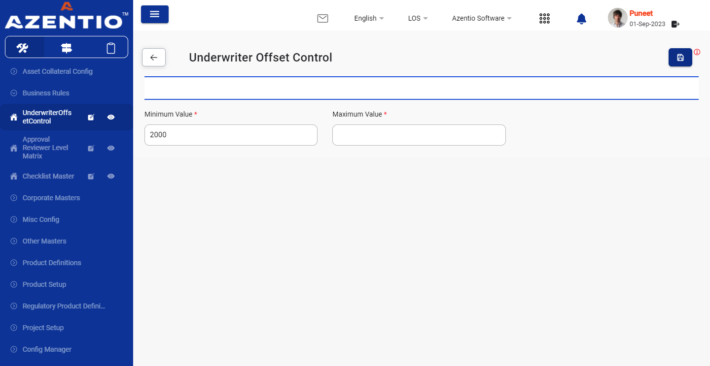And user can able to enter the maximum value input box for checker rejectstepdefinitions.HooksClass.addScreenshot(io.cucumber.java.Scenario)screenshotThen verify available field should be non mendatory and field should be display onlystepdefinitions.HooksClass.addScreenshot(io.cucumber.java.Scenario)screenshotThen verify selected field should be non mendatory and field should be display onlystepdefinitions.HooksClass.addScreenshot(io.cucumber.java.Scenario)screenshotThen click on save button in under writer off set screenstepdefinitions.HooksClass.addScreenshot(io.cucumber.java.Scenario)screenshot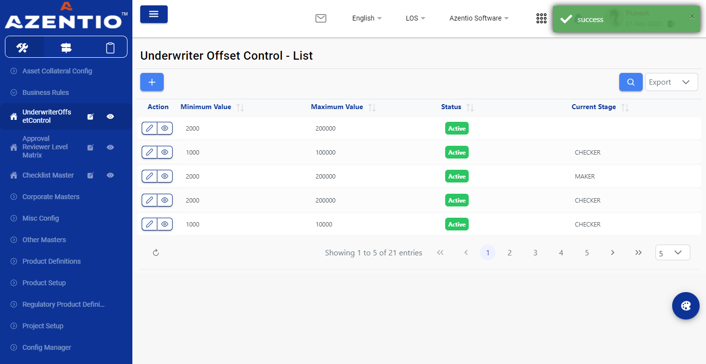When click on mail box after saving the under writer recordstepdefinitions.HooksClass.addScreenshot(io.cucumber.java.Scenario)screenshot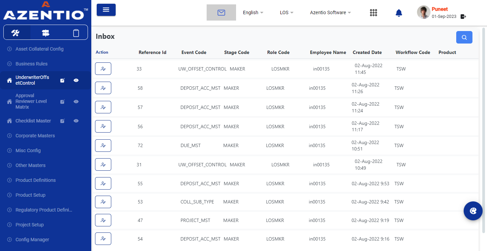Then click on search button to search the under writer off set recordstepdefinitions.HooksClass.addScreenshot(io.cucumber.java.Scenario)screenshotAnd click on first under writer off set recordstepdefinitions.HooksClass.addScreenshot(io.cucumber.java.Scenario)screenshot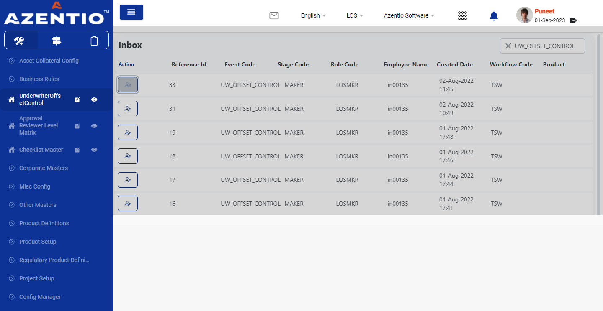And submit the under writer off set recordstepdefinitions.HooksClass.addScreenshot(io.cucumber.java.Scenario)screenshot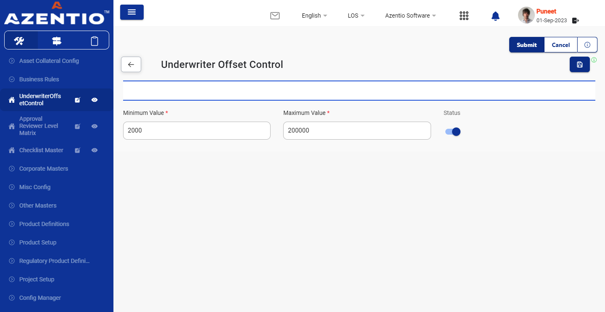Then give alert remark and click on submit in alertstepdefinitions.HooksClass.addScreenshot(io.cucumber.java.Scenario)screenshotThen store the checker idstepdefinitions.HooksClass.addScreenshot(io.cucumber.java.Scenario)screenshot FailTo verify checker user can able to reject the recordGiven Navigate to ULS application URLstepdefinitions.HooksClass.addScreenshot(io.cucumber.java.Scenario)screenshot
FailTo verify checker user can able to reject the recordGiven Navigate to ULS application URLstepdefinitions.HooksClass.addScreenshot(io.cucumber.java.Scenario)screenshot Then login with checker user for return the under writer recordstepdefinitions.HooksClass.addScreenshot(io.cucumber.java.Scenario)screenshot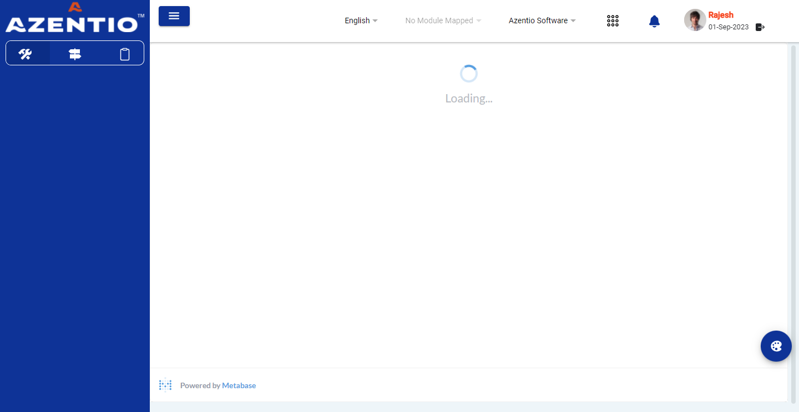And click on menu buttonstepdefinitions.HooksClass.addScreenshot(io.cucumber.java.Scenario)screenshotThen select the under writer record in checker stageStep skippedAnd click on reject button in checker stage to return the under writer off set control recordStep skippedAnd give the checker remark in alert pop up for reject the under writer recordStep skippedAnd click on reject button in remark pop up for reject the under writer recordStep skippedThen verify checker user can able to see the reject pop up after rejecting the under writer recordStep skippedFailTo verify user can able to create the under writer off set recordGiven Navigate to ULS application URLstepdefinitions.HooksClass.addScreenshot(io.cucumber.java.Scenario)screenshot
Then login with checker user for return the under writer recordstepdefinitions.HooksClass.addScreenshot(io.cucumber.java.Scenario)screenshot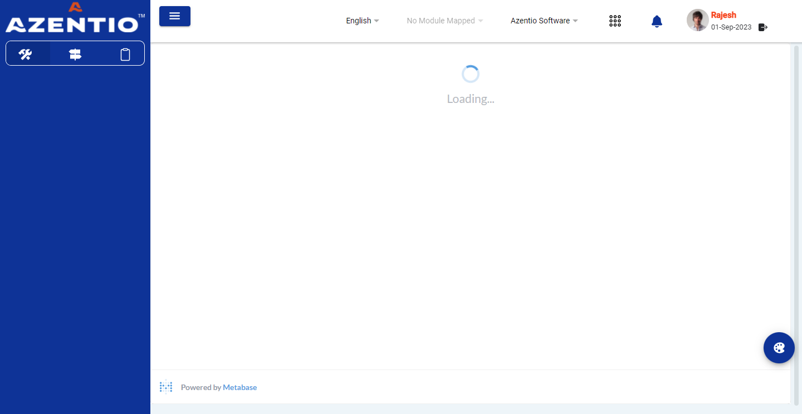And click on menu buttonstepdefinitions.HooksClass.addScreenshot(io.cucumber.java.Scenario)screenshotThen select the under writer record in checker stageStep skippedAnd click on reject button in checker stage to return the under writer off set control recordStep skippedAnd give the checker remark in alert pop up for reject the under writer recordStep skippedAnd click on reject button in remark pop up for reject the under writer recordStep skippedThen verify checker user can able to see the reject pop up after rejecting the under writer recordStep skippedFailTo verify user can able to create the under writer off set recordGiven Navigate to ULS application URLstepdefinitions.HooksClass.addScreenshot(io.cucumber.java.Scenario)screenshot Then login with valid maker credentialsstepdefinitions.HooksClass.addScreenshot(io.cucumber.java.Scenario)screenshot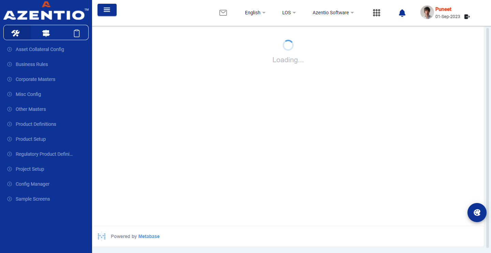And click on business rules main modulestepdefinitions.HooksClass.addScreenshot(io.cucumber.java.Scenario)screenshot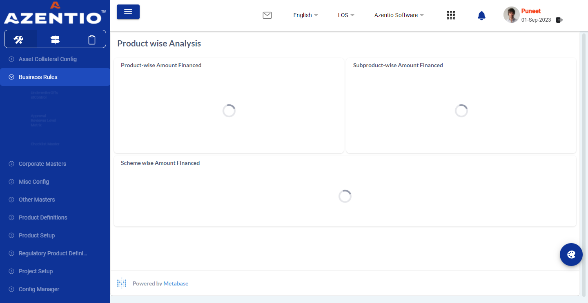And click on under writer off set control view buttonstepdefinitions.HooksClass.addScreenshot(io.cucumber.java.Scenario)screenshot
Then login with valid maker credentialsstepdefinitions.HooksClass.addScreenshot(io.cucumber.java.Scenario)screenshot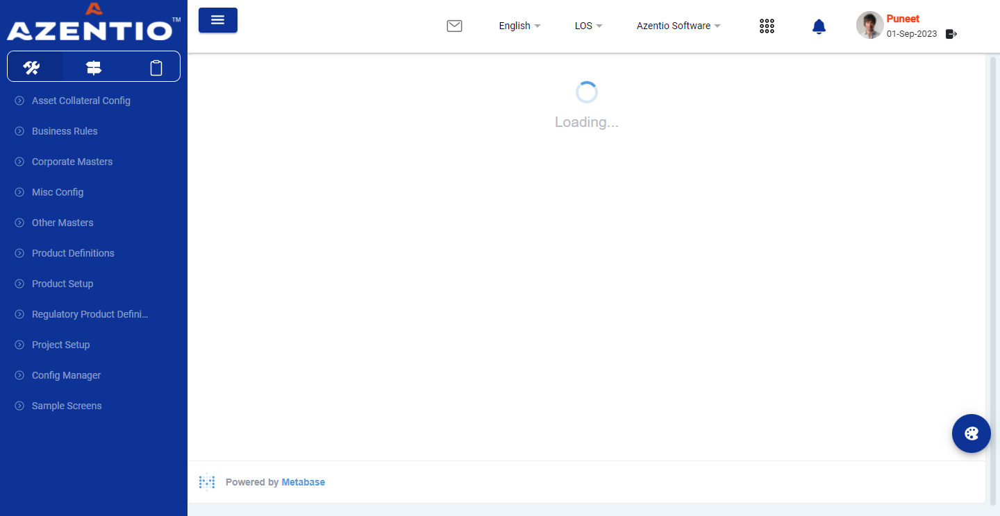And click on business rules main modulestepdefinitions.HooksClass.addScreenshot(io.cucumber.java.Scenario)screenshot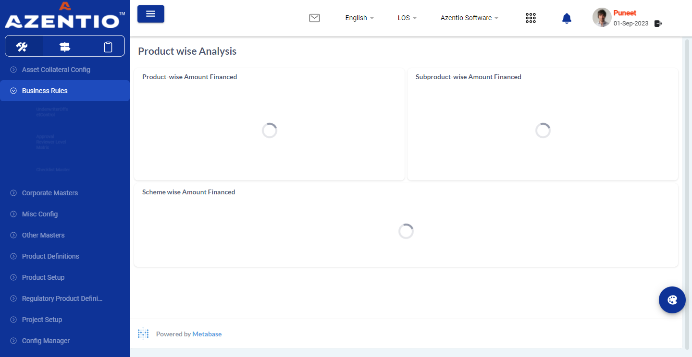And click on under writer off set control view buttonstepdefinitions.HooksClass.addScreenshot(io.cucumber.java.Scenario)screenshot Then click on add button to create under writer off set recordstepdefinitions.HooksClass.addScreenshot(io.cucumber.java.Scenario)screenshot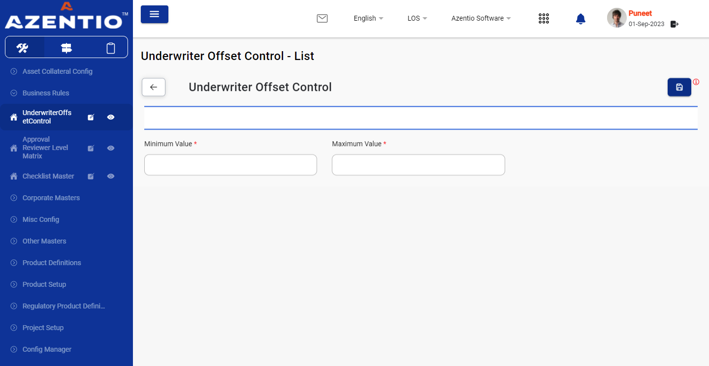Then verify back button and save buttons are visible when user click on add buttonstepdefinitions.HooksClass.addScreenshot(io.cucumber.java.Scenario)screenshot
Then click on add button to create under writer off set recordstepdefinitions.HooksClass.addScreenshot(io.cucumber.java.Scenario)screenshot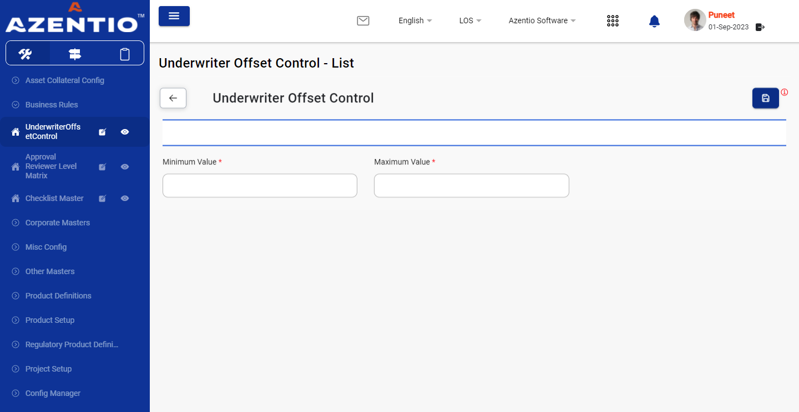Then verify back button and save buttons are visible when user click on add buttonstepdefinitions.HooksClass.addScreenshot(io.cucumber.java.Scenario)screenshot Then verify minimum value input box should be mendatory and field should be text boxstepdefinitions.HooksClass.addScreenshot(io.cucumber.java.Scenario)screenshotAnd user can able to enter the minimum value input box for checker returnstepdefinitions.HooksClass.addScreenshot(io.cucumber.java.Scenario)screenshot
Then verify minimum value input box should be mendatory and field should be text boxstepdefinitions.HooksClass.addScreenshot(io.cucumber.java.Scenario)screenshotAnd user can able to enter the minimum value input box for checker returnstepdefinitions.HooksClass.addScreenshot(io.cucumber.java.Scenario)screenshot Then verify maximum value input box should be mendatory and field should be text boxstepdefinitions.HooksClass.addScreenshot(io.cucumber.java.Scenario)screenshot
Then verify maximum value input box should be mendatory and field should be text boxstepdefinitions.HooksClass.addScreenshot(io.cucumber.java.Scenario)screenshot And user can able to enter the maximum value input box for checker returnstepdefinitions.HooksClass.addScreenshot(io.cucumber.java.Scenario)screenshot
And user can able to enter the maximum value input box for checker returnstepdefinitions.HooksClass.addScreenshot(io.cucumber.java.Scenario)screenshot Then verify available field should be non mendatory and field should be display onlystepdefinitions.HooksClass.addScreenshot(io.cucumber.java.Scenario)screenshot
Then verify available field should be non mendatory and field should be display onlystepdefinitions.HooksClass.addScreenshot(io.cucumber.java.Scenario)screenshot Then verify selected field should be non mendatory and field should be display onlystepdefinitions.HooksClass.addScreenshot(io.cucumber.java.Scenario)screenshotThen click on save button in under writer off set screenstepdefinitions.HooksClass.addScreenshot(io.cucumber.java.Scenario)screenshotWhen click on mail box after saving the under writer recordstepdefinitions.HooksClass.addScreenshot(io.cucumber.java.Scenario)screenshot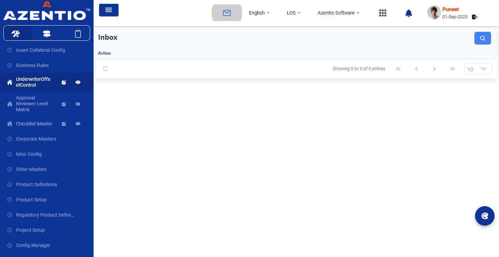Then click on search button to search the under writer off set recordstepdefinitions.HooksClass.addScreenshot(io.cucumber.java.Scenario)screenshot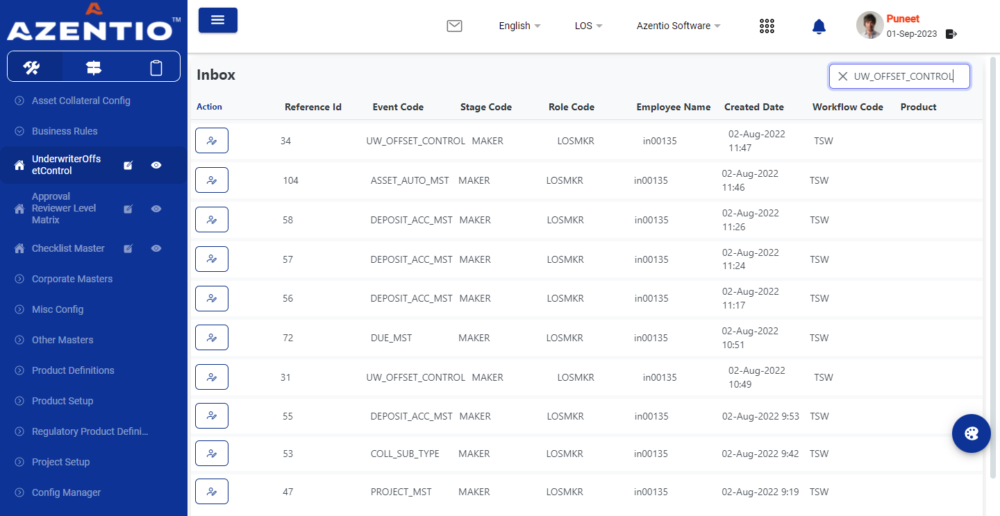And click on first under writer off set recordstepdefinitions.HooksClass.addScreenshot(io.cucumber.java.Scenario)screenshot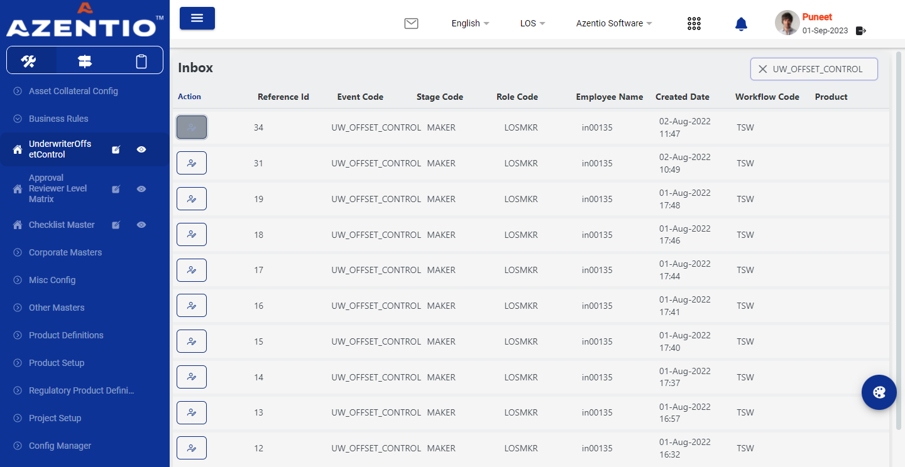And submit the under writer off set recordstepdefinitions.HooksClass.addScreenshot(io.cucumber.java.Scenario)screenshot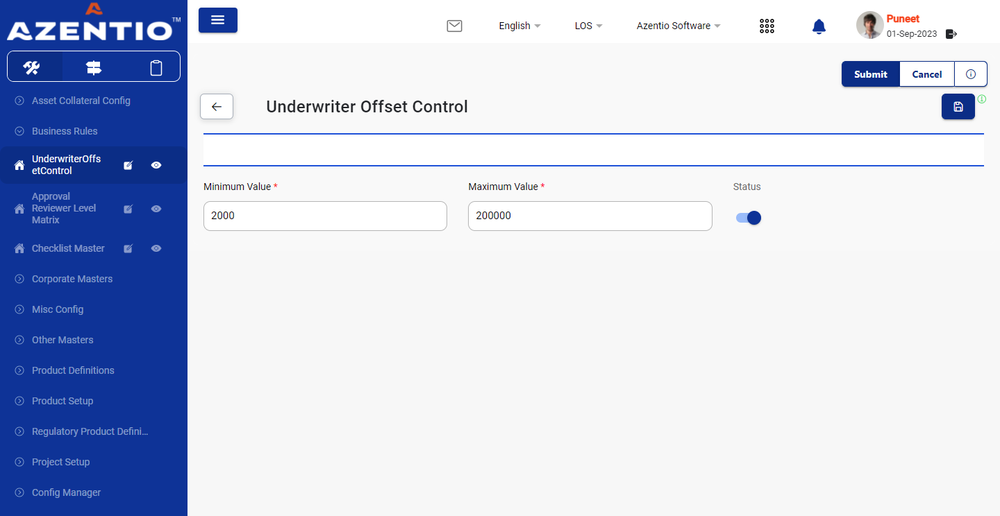Then give alert remark and click on submit in alertstepdefinitions.HooksClass.addScreenshot(io.cucumber.java.Scenario)screenshot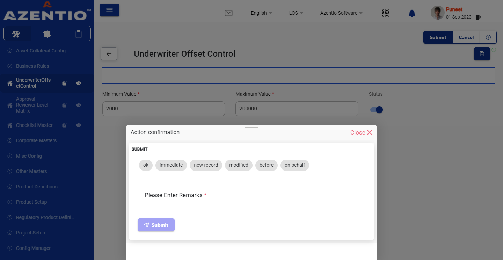Then store the checker idstepdefinitions.HooksClass.addScreenshot(io.cucumber.java.Scenario)screenshotFailTo verify checker user can able to return the recordGiven Navigate to ULS application URLstepdefinitions.HooksClass.addScreenshot(io.cucumber.java.Scenario)screenshot
Then verify selected field should be non mendatory and field should be display onlystepdefinitions.HooksClass.addScreenshot(io.cucumber.java.Scenario)screenshotThen click on save button in under writer off set screenstepdefinitions.HooksClass.addScreenshot(io.cucumber.java.Scenario)screenshotWhen click on mail box after saving the under writer recordstepdefinitions.HooksClass.addScreenshot(io.cucumber.java.Scenario)screenshot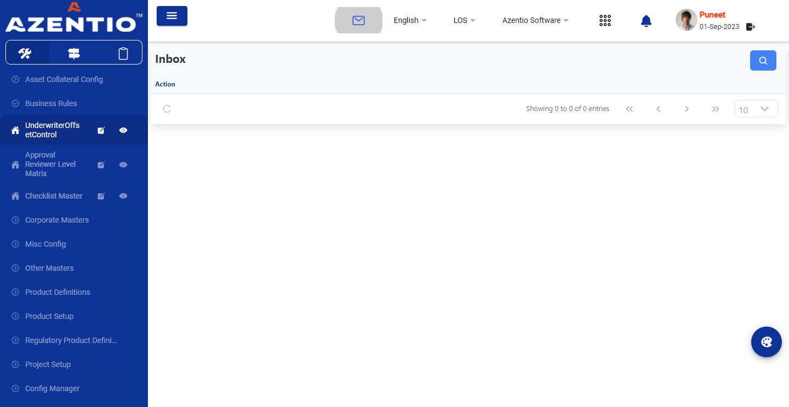Then click on search button to search the under writer off set recordstepdefinitions.HooksClass.addScreenshot(io.cucumber.java.Scenario)screenshot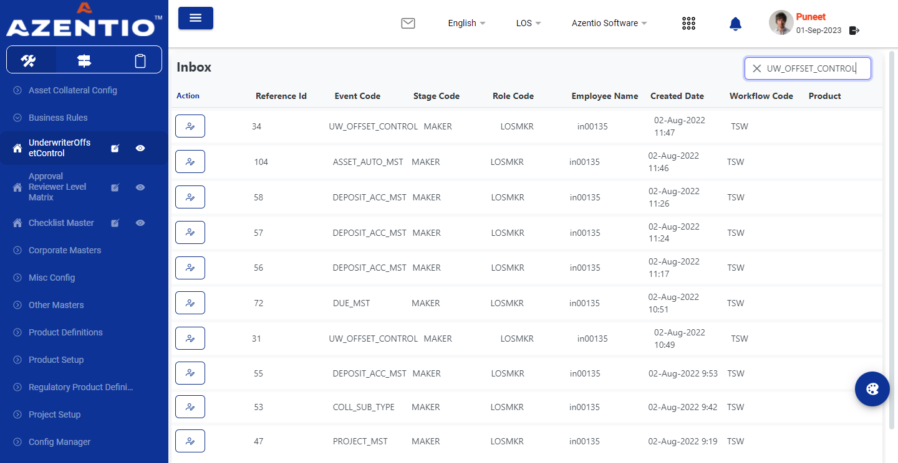And click on first under writer off set recordstepdefinitions.HooksClass.addScreenshot(io.cucumber.java.Scenario)screenshot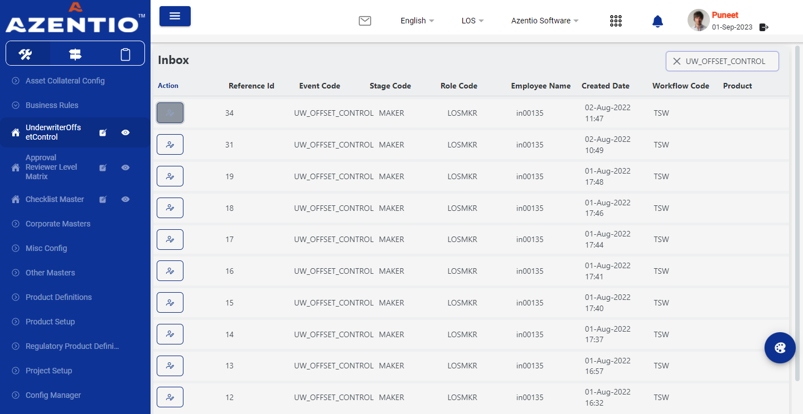And submit the under writer off set recordstepdefinitions.HooksClass.addScreenshot(io.cucumber.java.Scenario)screenshot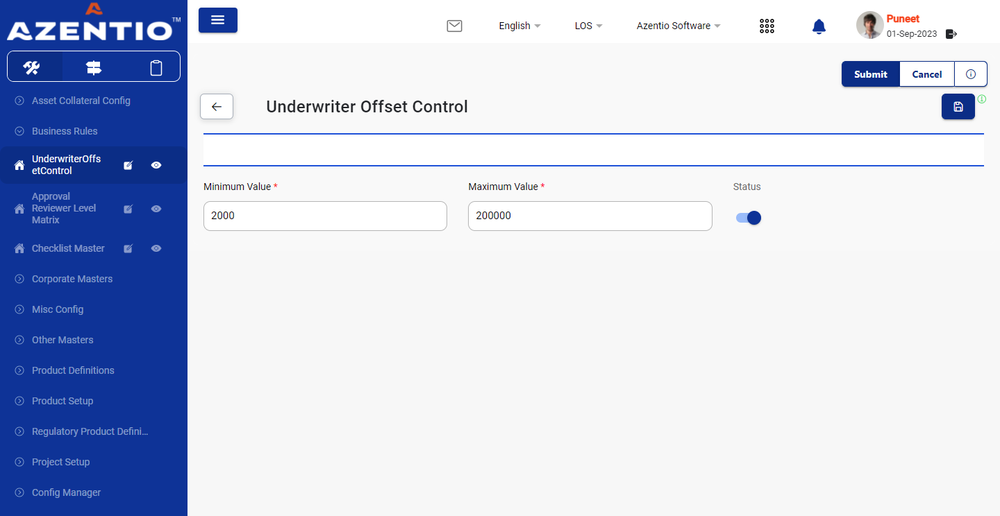Then give alert remark and click on submit in alertstepdefinitions.HooksClass.addScreenshot(io.cucumber.java.Scenario)screenshot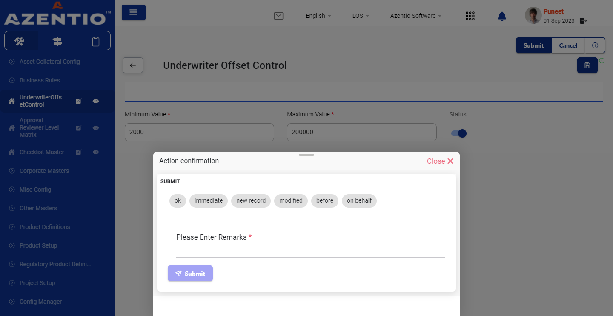Then store the checker idstepdefinitions.HooksClass.addScreenshot(io.cucumber.java.Scenario)screenshotFailTo verify checker user can able to return the recordGiven Navigate to ULS application URLstepdefinitions.HooksClass.addScreenshot(io.cucumber.java.Scenario)screenshot Then login with checker user for return the under writer recordstepdefinitions.HooksClass.addScreenshot(io.cucumber.java.Scenario)screenshot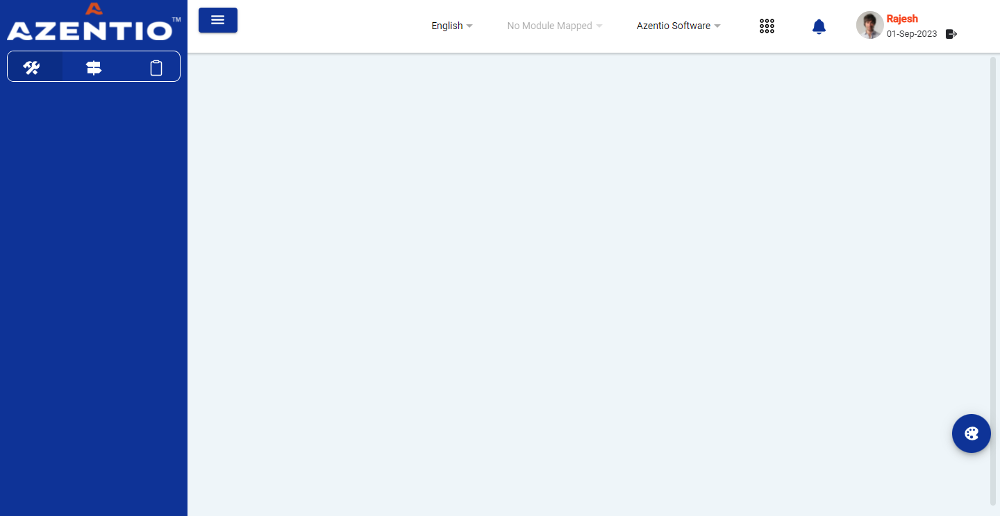And click on menu buttonstepdefinitions.HooksClass.addScreenshot(io.cucumber.java.Scenario)screenshot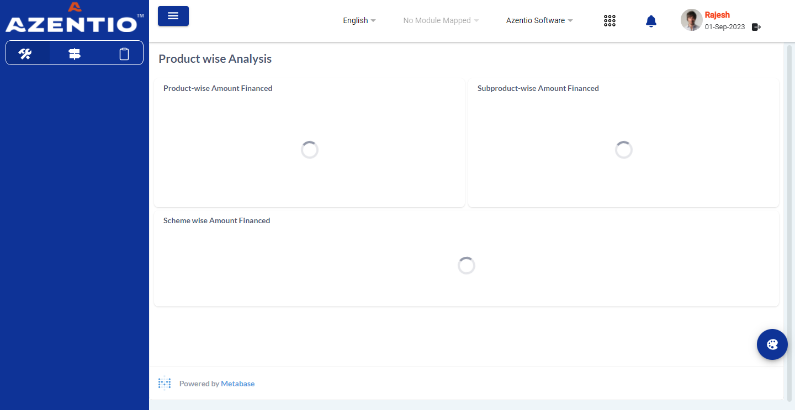Then select the under writer record in checker stageStep skippedAnd click on return button in checker stage to return the under writer off set control recordStep skippedAnd give the checker remark in alert pop up for return the under writer recordStep skippedAnd click on return button in remark pop up for return the under writer recordStep skippedThen verify checker user can able to see the reject pop up after returning the under writer recordStep skipped
Then login with checker user for return the under writer recordstepdefinitions.HooksClass.addScreenshot(io.cucumber.java.Scenario)screenshot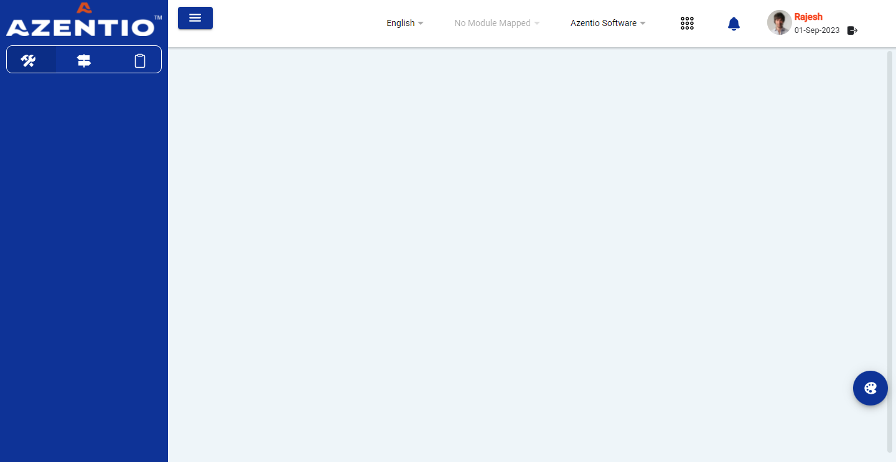And click on menu buttonstepdefinitions.HooksClass.addScreenshot(io.cucumber.java.Scenario)screenshot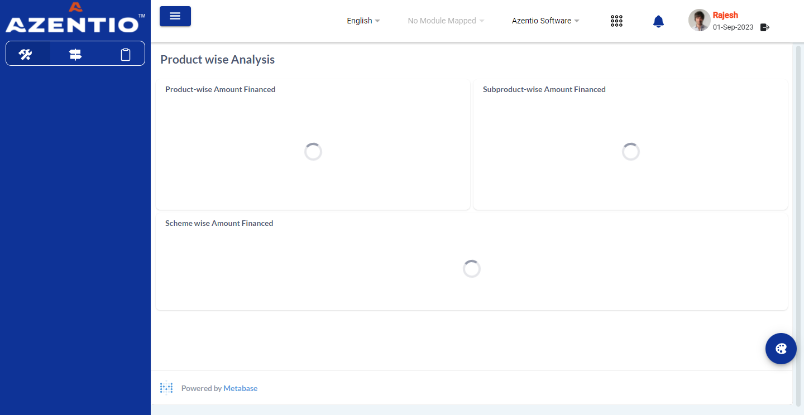Then select the under writer record in checker stageStep skippedAnd click on return button in checker stage to return the under writer off set control recordStep skippedAnd give the checker remark in alert pop up for return the under writer recordStep skippedAnd click on return button in remark pop up for return the under writer recordStep skippedThen verify checker user can able to see the reject pop up after returning the under writer recordStep skipped
Started
Aug 2, 2022 11:40:13 AM
Ended
Aug 2, 2022 11:45:08 AM
Features Passed
0
Features Failed
1
Features
Scenarios
Steps
Timeline
Tags
| Name | Passed | Failed | Skipped | Others | Passed % |
|---|---|---|---|---|---|
| @AT_UOC_T001.2 | 1 | 0 | 0 | 0 | 100% |
| @AT_UOC_T002 | 0 | 1 | 0 | 0 | 0% |
| @AT_UOC_T001.3 | 0 | 1 | 0 | 0 | 0% |
| @AT_UOC_T004 | 0 | 1 | 0 | 0 | 0% |
| @AT_UOC_T001 | 1 | 0 | 0 | 0 | 100% |
| @AT_UOC_T003 | 0 | 1 | 0 | 0 | 0% |
System/Environment
| Name | Value |
|---|---|
| version | 10 |
| os | windows |
-
@AT_UOC_T001.2
1 tests
@AT_UOC_T001.2
1 passedStatus Timestamp TestName Pass 11:42:34 AM To verify user can able to create the under writer off set record To verify under writer offset control module fields and creation and updation.To verify user can able to create the under writer off set record -
@AT_UOC_T002
1 tests
@AT_UOC_T002
1 failedStatus Timestamp TestName Fail 11:41:49 AM To verify checker user can able to approve the under writer off set control record To verify under writer offset control module fields and creation and updation.To verify checker user can able to approve the under writer off set control record -
@AT_UOC_T001.3
1 tests
@AT_UOC_T001.3
1 failedStatus Timestamp TestName Fail 11:43:52 AM To verify user can able to create the under writer off set record To verify under writer offset control module fields and creation and updation.To verify user can able to create the under writer off set record -
@AT_UOC_T004
1 tests
@AT_UOC_T004
1 failedStatus Timestamp TestName Fail 11:44:34 AM To verify checker user can able to return the record To verify under writer offset control module fields and creation and updation.To verify checker user can able to return the record -
@AT_UOC_T001
1 tests
@AT_UOC_T001
1 passedStatus Timestamp TestName Pass 11:40:15 AM To verify user can able to create the under writer off set record To verify under writer offset control module fields and creation and updation.To verify user can able to create the under writer off set record -
@AT_UOC_T003
1 tests
@AT_UOC_T003
1 failedStatus Timestamp TestName Fail 11:43:22 AM To verify checker user can able to reject the record To verify under writer offset control module fields and creation and updation.To verify checker user can able to reject the record
-
org.openqa.selenium.TimeoutException
1 tests
org.openqa.selenium.TimeoutException
1 failedStatus Timestamp TestName Fail 11:44:28 AM Then store the checker id To verify under writer offset control module fields and creation and updation.To verify user can able to create the under writer off set record.Then store the checker id -
org.openqa.selenium.ElementClickInterceptedException
1 tests
org.openqa.selenium.ElementClickInterceptedException
1 failedStatus Timestamp TestName Fail 11:42:32 AM And click on menu button To verify under writer offset control module fields and creation and updation.To verify checker user can able to approve the under writer off set control record.And click on menu buttonFail 11:43:49 AM And click on menu button To verify under writer offset control module fields and creation and updation.To verify checker user can able to reject the record.And click on menu buttonFail 11:45:00 AM And click on menu button To verify under writer offset control module fields and creation and updation.To verify checker user can able to return the record.And click on menu button